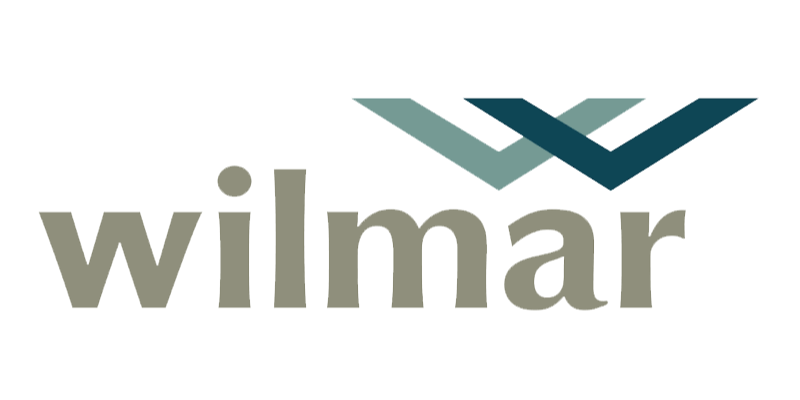

Wilmar
Perancangan portal korporat terpadu untuk perusahaan terbuka, mencakup repositori publikasi laporan keuangan berkala, pengumuman RUPS, serta keterbukaan tata kelola inisiatif keberlanjutan (ESG) berstandar internasional.

Klien Resmi TerverifikasiHubungan Investor & Regulasi Pasar Modal
Wilmar International merupakan grup agribisnis dan pengolahan pangan terkemuka yang terdaftar di bursa efek. Sebagai perusahaan publik (Tbk) berskala multinasional, website korporat berfungsi sebagai saluran komunikasi primer bagi para pemegang saham, analis pasar modal, regulator keuangan, dan masyarakat global.
Arsitektur Informasi Korporat:
- Tentang Korporasi: Sejarah pertumbuhan, profil dewan komisaris dan direksi, serta nilai tata kelola perusahaan.
- Lini Bisnis & Operasional: Pemetaan sektor perkebunan, pengolahan minyak nabati, logistik industri, dan distribusi pangan.
- Hubungan Investor (Investor Relations): Repositori terpusat untuk laporan tahunan, laporan keuangan interim, keterbukaan fakta material, dan harga saham real-time.
- Keberlanjutan (ESG Governance): Transparansi inisiatif dekarbonisasi, pelacakan rantai pasok minyak sawit, dan sertifikasi RSPO/ISPO.
Transparansi Data Terbaca Mesin
Tabel Semantik Terstruktur
Penyajian data keuangan menggunakan penandaan judul kolom dan baris yang ketat sehingga terbaca akurat oleh mesin pencari bursa dan pembaca layar disabilitas.
Repositori Dokumen Terindeks Cepat
Sistem pengarsipan berkas laporan PDF kuartalan dan tahunan yang mudah diunduh investor dengan metadata tahun buku lengkap.
Standar Aksesibilitas WCAG 2.1 AA
Kepatuhan kontras rasio warna dan dukungan antarmuka dwibahasa (ID/EN) yang menjamin kenyamanan seluruh pemangku kepentingan global.
Layanan Terkait Proyek Ini
EXPLORE MORE CASE STUDIES
Kembali ke katalog karya atau diskusikan kebutuhan portal korporat perusahaan Anda bersama Rubicweb.